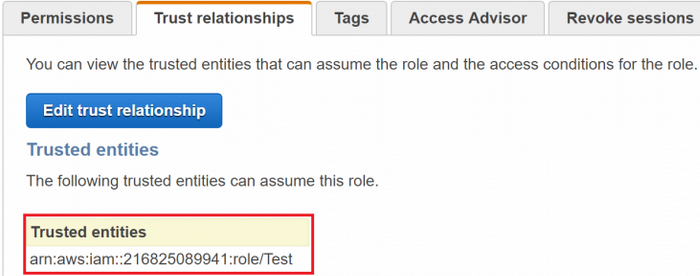

Let’s consider the following IAM role trust policy, which allows the “Test” role from the account ID “216825089941” to assume it.
{"Version":"2012-10-17","Statement":[{"Effect":"Allow","Principal":{"AWS":"arn:aws:iam::216825089941:role\/Test"},"Action":"sts:AssumeRole"}]}
If we look at the trust relationships tab in the IAM web console, this is what we see:

Now, if we go and delete the “Test” role, then look at the trust relationships page again, we will see something different:

Then, if we hit “Edit trust relationship”, we will see that same value specified as the principal in the trust policy, but if we click “Update Trust Policy”, we will be shown this error message:

So, what happened? We didn’t change the value, but it was changed to an invalid value automatically. This is because when you save the trust policy document of a role, AWS security will find the resource specified in the principal somewhere in AWS to ensure that it exists. If the resource is found, the trust policy will save successfully, but if it is not found, then an error will be thrown, indicating an invalid principal was supplied. When AWS does this on the back-end, it takes the ARN that you supplied (“arn:aws:iam::216825089941:role/Test” for us) and matches it to a unique identifier that correlates to the resource in AWS. Then, when we deleted the “Test” role, AWS was no longer able to match the ARN we specified to an AWS resource, so by default, it will replace the ARN with the unique ID that was associated with that resource originally.